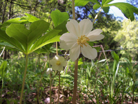
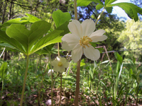

Next Photo
-
Vote
Notes With Color
Some say only those with perfect pitch can see color in sound. I disagree, and you can see why. At Cornerstone Music Festival there was a band, two red heads and a guy in a blue jacket, all with red guitars, a blue drumset, and a lead singer dressed in grey. The colors were wonderful, and so was the music. While I was watching I saw that one of the guitarists had a rainbow of colors on the ends of hist strings. It provided a perfect opportunity for a photo. I love the idea of different notes having different color, and this demonstrated it wonderfully.
More...
ID: 51
Title: Notes With Color
Description: Some say only those with perfect pitch can see color in sound. I disagree, and you can see why. At Cornerstone Music Festival there was a band, two red heads and a guy in a blue jacket, all with red guitars, a blue drumset, and a lead singer dressed in grey. The colors were wonderful, and so was the music. While I was watching I saw that one of the guitarists had a rainbow of colors on the ends of hist strings. It provided a perfect opportunity for a photo. I love the idea of different notes having different color, and this demonstrated it wonderfully.
Keywords: color notes guitar string
Hidden: n
Date added: Sat Oct 21 23:07:12 CDT 2006
Date taken: Sat Oct 21 23:04:43 CDT 2006
Camera: FUJIFILM.FinePix S5100 .
Resolution: 2272x1704
Mode: 0
Shutter speed: 777/100
Flash: 16
Exposure time: 10/2100
Iso: 100
Metering: 3
Aperture: 330/100
Focal length: 5700/100
Artist: NathanielGuy Mahieu
Copyright: 2006 NathanielGuy Mahieu
Views: 1739
 
